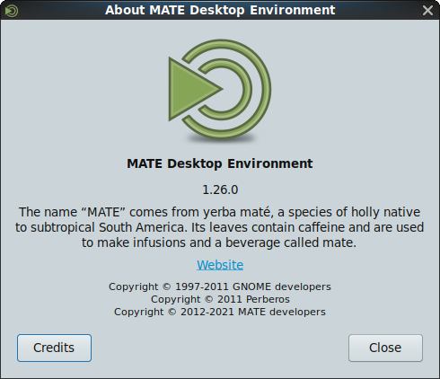

MATE 1.28 released
It is release time once again. We worked hard to bring you the best desktop experience possible. A big thank you to all contributors who helped to make this happen.

What’s new in MATE 1.28
This time we focused on modernizing the codebase while keeping the stability and robustness you all know and love from the MATE Desktop. This means that we removed some deprecated libaries, staying up-to-date with GTK versions and squashing a lot of bugs. In addition, we are one step closer to a native MATE-Wayland experience!
The headline changes in MATE Desktop 1.28 are:
- Translations are updated. Thank you to our team of translators!
The various components of MATE Desktop 1.28 are available for download here:
More details
Here are the gory details.
atril
- For comics, we now use the libarchive library to unpack documents
- Atril now supports the newest version 4.2.1 of webkitgtk.
- Did you know that Atril can display epub documents? This feature is now documented.
- Replace various deprecated methods with their modern counterparts
- Translations update
Complete changelog at https://github.com/mate-desktop/atril/commits/master/
caja
- Caja can now manage icons on a wayland desktop, render the background, and change the background (wayland support is a build option). Launch in wayland sessions with —force-desktop to show desktop icons
- Fixed some issues found by cppcheck
- Translations update
Complete changelog at https://github.com/mate-desktop/caja/commits/master/
caja-actions
- Fixed some build warnings
- Fixed a memory leak
- Translations update
Complete changelog at https://github.com/mate-desktop/caja-actions/commits/master/
caja-dropbox
- Fixed a build warning
- Translations update
Complete changelog at https://github.com/mate-desktop/caja-dropbox/commits/master/
caja-extensions
- Add the audio-video-properties plugin. This 2000+ lines of code change, let you view the exact properties of your media files directly in the file manager
- For the sendto extension, we now require gupnp version 1.6
- Some build and deprecation warning fixes
- Translations update
Complete changelog at https://github.com/mate-desktop/caja-extensions/commits/master/
engrampa
- Engrampa now supports the Meson build system
- Use unar instead of cpio for CPIO archives
- We now support unrar-free
- Enhance the codebase
- Translations update
Complete changelog at https://github.com/mate-desktop/engrampa/commits/master/
eom
- Eye of MATE now supports the Meson build system
- Fixed some build warnings
- Translations update
Complete changelog at https://github.com/mate-desktop/eom/commits/master/
libmatekbd
- Fixed some memory leaks
- Translations update
Complete changelog at https://github.com/mate-desktop/libmatekbd/commits/master/
libmatemixer
- Translations update
Complete changelog at https://github.com/mate-desktop/libmatemixer/commits/master/
libmateweather
- Translations update
Complete changelog at https://github.com/mate-desktop/libmateweather/commits/master/
marco
- We added a setting to to raise windows on the alt+tab popup
- Replace various deprecated methods with their modern counterparts
- Some small fixes
- Translations update
Complete changelog at https://github.com/mate-desktop/marco/commits/master/
mate-applets
- A lot of wayland specific commits:
- Most of the panel applets will now function under wayland if built in-process
- Building the applets in-process is now supported
- The exceptions are AccessX, which relies on x11 keyboard and mouse configuration code; and Geyes, which cannot see the pointer when it it outside the panel under wayland due to how wayland works.
- Note that the battery applet can be used in wayland, which is important because mate-power-manager uses a lot of x11 specific code and does not work under wayland at this time.
- Fixed some memory leaks
- Accessability improvements
- Translations update
Complete changelog at https://github.com/mate-desktop/mate-applets/commits/master/
mate-backgrounds
- Fix build warnings
- Translations update
Complete changelog at https://github.com/mate-desktop/mate-backgrounds/commits/master/
mate-calc
- Fixed a memory leak
- Translations update
Complete changelog at https://github.com/mate-desktop/mate-calc/commits/master/
mate-common
- As stable as always
Complete changelog at https://github.com/mate-desktop/mate-common/commits/master/
mate-control-center
- Now works under wayland sessions as well as x11
- The MATE control center now supports the Meson build system
- Some memory leak fixes
- The UI received small improvements
- Translations update
Complete changelog at https://github.com/mate-desktop/mate-control-center/commits/master/
mate-desktop
- A few changes were necessary to support background handling under wayland
- A new ‘mate_image_menu_item’ function api was added to support image menu items with gtk3
- Add support for meson
- Some dead code was removed
- Fixed some memory leaks
- Fixed a lot of analyzer warnings
- Translations update
Complete changelog at https://github.com/mate-desktop/mate-desktop/commits/master/
mate-icon-theme
- Translations update
Complete changelog at https://github.com/mate-desktop/mate-icon-theme/commits/master/
mate-indicator-applet
- Mouse middle-click is now supported
- Translations update
Complete changelog at https://github.com/mate-desktop/mate-indicator-applet/commits/master/
mate-media
- Now supports wayland as a build time option. Behavior almost identical in x11 and wayland
- Add Meson build system support
- Translations update
Complete changelog at https://github.com/mate-desktop/mate-media/commits/master/
mate-menus
- Fix some build warnings
- Add Meson build system support
- Translations update
Complete changelog at https://github.com/mate-desktop/mate-menus/commits/master/
mate-netbook
- TODO
Complete changelog at https://github.com/mate-desktop/mate-netbook/commits/master/
mate-notification-daemon
- Some improvements on wayland
- Only exit on idle when explicitly requested
- Fix some memory leaks
- Translations update
Complete changelog at https://github.com/mate-desktop/mate-notification-daemon/commits/master/
mate-panel
- New for 1.28 is a working window list under wayland, and the tray applet can now display indicators under wayland, notably network-manager-applet when it is launched with —indicator. Traditional tray icons not displayed as they use Xembed which is not supported in wayland.
Complete changelog at https://github.com/mate-desktop/mate-panel/commits/master/
mate-polkit
Complete changelog at https://github.com/mate-desktop/mate-polkit/commits/master/
mate-power-manager
Complete changelog at https://github.com/mate-desktop/mate-power-manager/commits/master/
mate-screensaver
Complete changelog at https://github.com/mate-desktop/mate-screensaver/commits/master/
mate-sensors-applet
- The sensors applet can now be used in a wayland session’s panel as well as under x11 if built in-process (as needed for wayland)
Complete changelog at https://github.com/mate-desktop/mate-sensors-applet/commits/master/
mate-session-manager
Complete changelog at https://github.com/mate-desktop/mate-session-manager/commits/master/
mate-settings-daemon
Complete changelog at https://github.com/mate-desktop/mate-settings-daemon/commits/master/
mate-system-monitor
Complete changelog at https://github.com/mate-desktop/mate-system-monitor/commits/master/
mate-terminal
- New for 1.28 is a bugfix to allow launching x11 applications in a wayland session via xWayland
Complete changelog at https://github.com/mate-desktop/mate-terminal/commits/master/
mate-user-guide
Complete changelog at https://github.com/mate-desktop/mate-user-guide/commits/master/
mate-user-share
Complete changelog at https://github.com/mate-desktop/mate-user-share/commits/master/
mate-utils
Complete changelog at https://github.com/mate-desktop/mate-utils/commits/master/
mate-wayland-session
- The dictionary panel applet can be used in a wayland session’s panel as well as under x11 if built with wayland support
Complete changelog at https://github.com/mate-desktop/mate-wayland-session/commits/master/
mozo
Complete changelog at https://github.com/mate-desktop/mozo/commits/master/
pluma
Complete changelog at https://github.com/mate-desktop/pluma/commits/master/
pluma-plugins
python-caja
Complete changelog at https://github.com/mate-desktop/python-caja/commits/master/